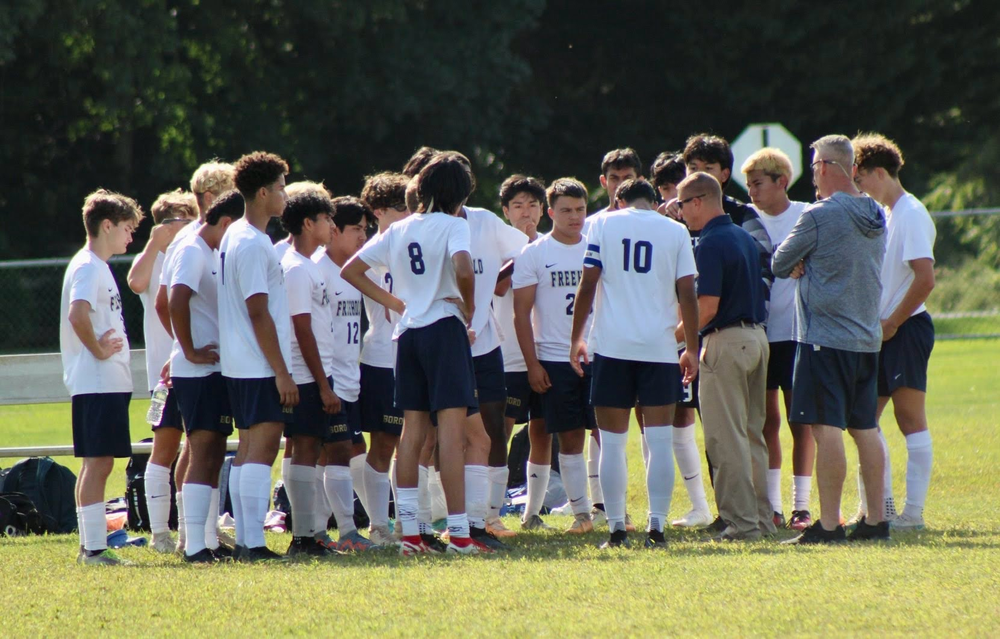
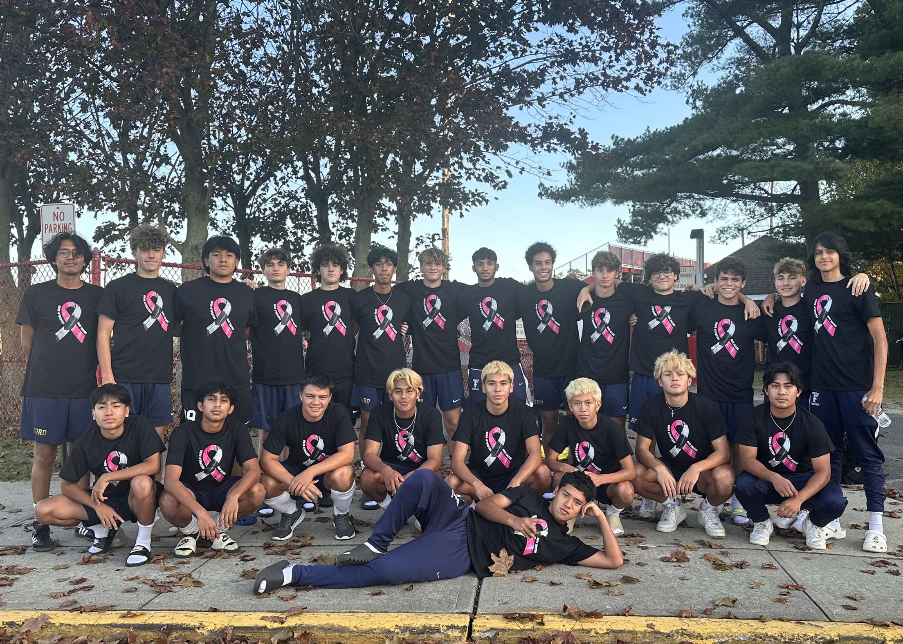
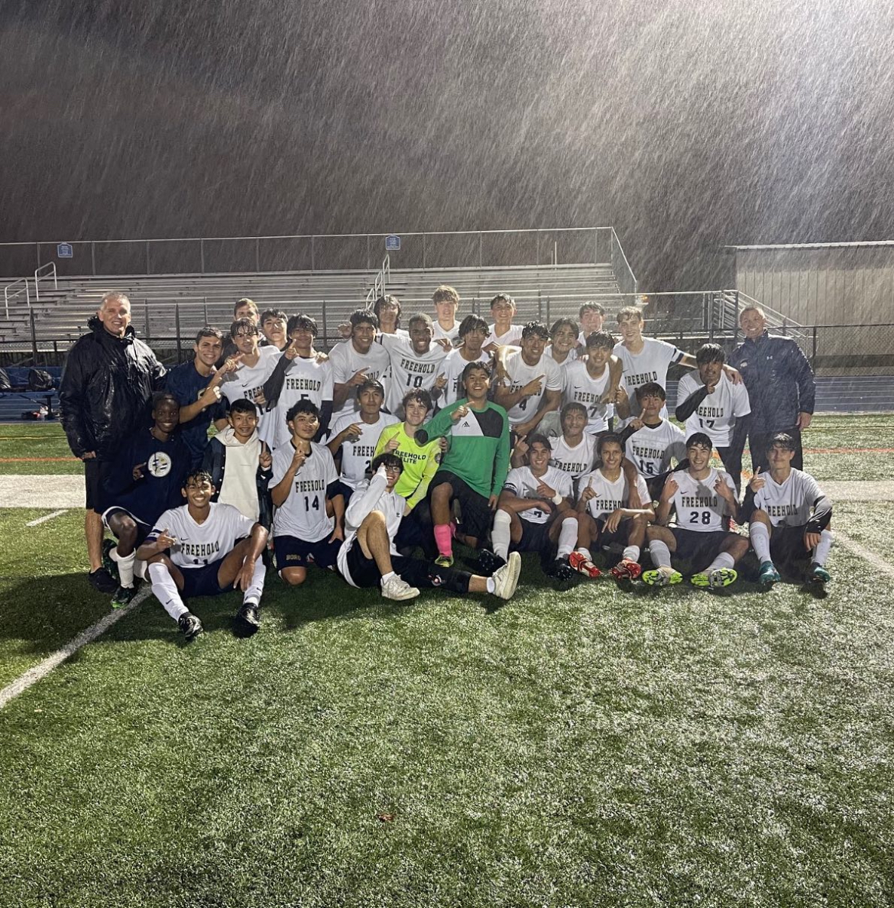
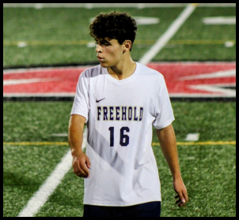
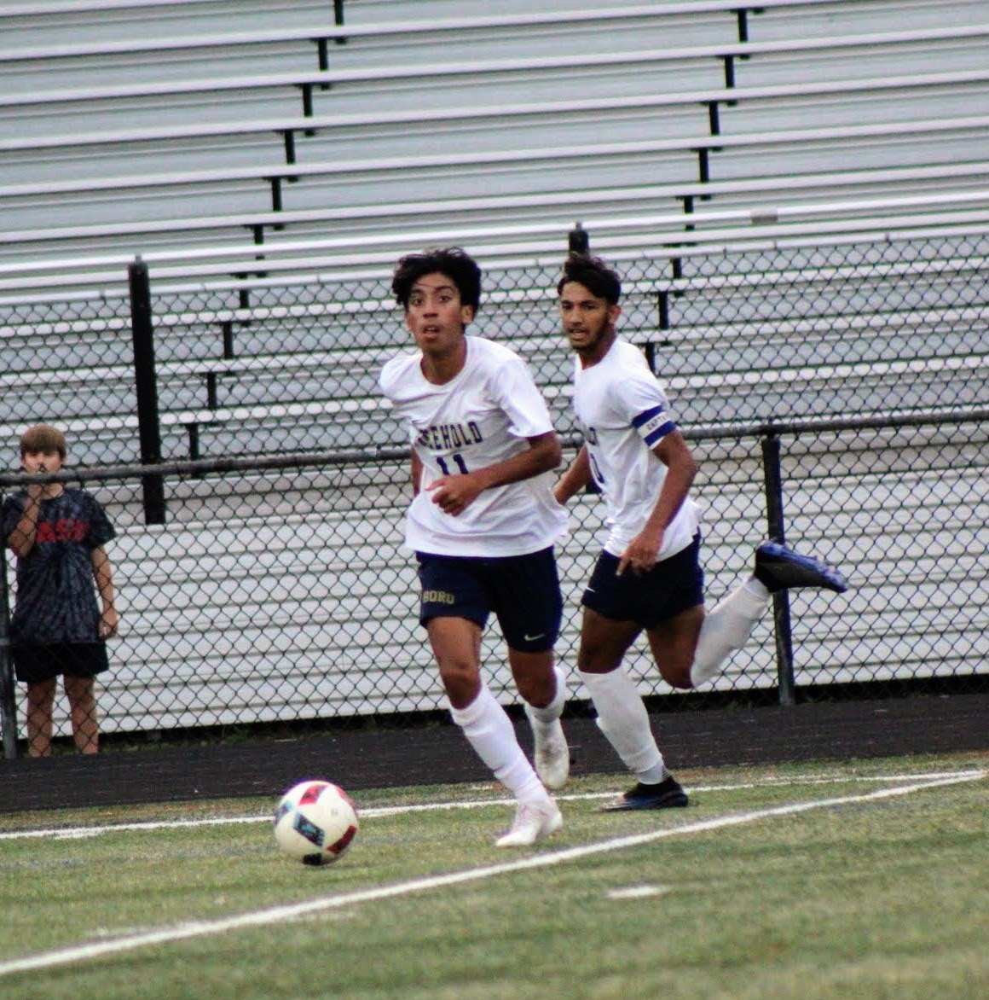

<!DOCTYPE html>
<html>

<head>
  <meta charset="utf-8">
  <meta name="viewport" content="width=device-width, initial-scale=1">
  <title>Freehold Boro Soccer</title>
  <link href="https://cdn.jsdelivr.net/npm/bootstrap@5.3.2/dist/css/bootstrap.min.css" rel="stylesheet"
    integrity="sha384-T3c6CoIi6uLrA9TneNEoa7RxnatzjcDSCmG1MXxSR1GAsXEV/Dwwykc2MPK8M2HN" crossorigin="anonymous">
  <script src="https://cdn.jsdelivr.net/npm/bootstrap@5.3.2/dist/js/bootstrap.bundle.min.js"
    integrity="sha384-C6RzsynM9kWDrMNeT87bh95OGNyZPhcTNXj1NW7RuBCsyN/o0jlpcV8Qyq46cDfL"
    crossorigin="anonymous"></script>
  <link rel="preconnect" href="https://fonts.googleapis.com">
  <link rel="preconnect" href="https://fonts.gstatic.com" crossorigin>
  <link href="https://fonts.googleapis.com/css2?family=Exo+2:wght@300&display=swap" rel="stylesheet">
  <script src="script.js"></script>
  <link rel="stylesheet" href="style.css">
   <link rel="icon" type="image/x-icon" href="img/boro.png">
</head>

</html>

<!--Navbar-->

<nav class="navbar navbar-expand-lg bg-body-tertiary">
  <div class="container-fluid">
    <a class="navbar-brand" href="index.html"></a>
    <button class="navbar-toggler" type="button" data-bs-toggle="collapse" data-bs-target="#navbarNavAltMarkup"
      aria-controls="navbarNavAltMarkup" aria-expanded="false" aria-label="Toggle navigation">
      <span class="navbar-toggler-icon"></span>
    </button>
    <div class="collapse navbar-collapse" id="navbarNavAltMarkup">
      <div class="navbar-nav">
        <a class="nav-link active" aria-current="page" href="index.html">Home</a>
        <a class="nav-link" href="roster.html">Roster</a>
        <a class="nav-link" href="stat.html">Stat</a>
        <a class="nav-link" href="contact.html">Contact</a>
      </div>
    </div>
  </div>
</nav>

<!--Photos-->
<div class="row">
  <div class="col">
    <h1 class="web">Boro Soccer Website</h1>
  </div>
</div>

<div class="container">
  <div class="1"></div>
  <div class="2"></div>
  <div class="3"></div>
  <div class="4"></div>
  <div class="5"></div>
  <div class="6"></div>
</div>

<!--Text Information-->
<p>Boro Soccer is more than just a program it is a family. Apart from its many health benefits of running, sprinting,
  and continuous movement, which helps to improve cardiovascular health, build endurance, and strengthen muscles. Boro
  encourages teamwork and collaboration. It is a team sport that requires coordination and communication among players
  to achieve a common goal. This fosters a sense of camaraderie, trust, and unity among teammates. Additionally, soccer
  provides an avenue for personal growth and development. It teaches valuable skills such as discipline, perseverance,
  and sportsmanship. Players learn to handle both success and defeat with grace, and they develop resilience when faced
  with challenges on the field. Boro focuses on all programs and bring in many talented freshmen all the way up to
  experienced Juniors and Seniors. </p>
<p>If you are interested in joining next year make sure to fill out 6 forms on Genesis Parent Portal (yearly
  requirement) these open up in the Spring. Additionally, all athletes must hand a yearly copy of their physical exam to
  the school nurses.
</p>

 <a href="https://instagram.com/freeholdborosoccer?igshid=MWhvbGhweTR5N3VwbA=="></a>
<a href="https://twitter.com/BoysSoccerFBHS"></a>

<script src="script.js"></script>
</body>

</html>